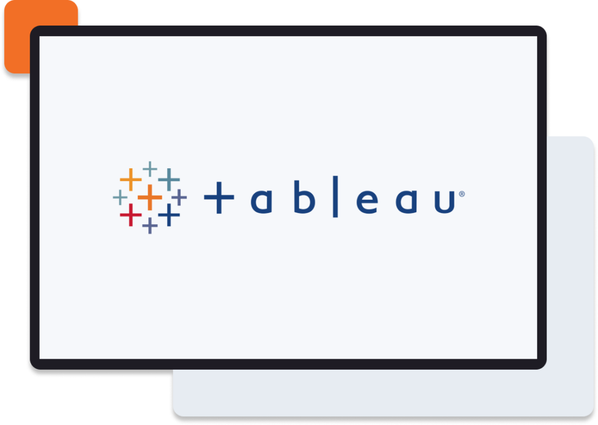

In this SQL project, I meticulously cleaned a housing dataset by identifying and rectifying inconsistencies, inaccuracies, and missing values. By leveraging SQL's querying and data manipulation functions, I ensured the dataset's integrity and reliability, paving the way for further analysis.

I executed a comprehensive data exploration endeavor employing SQL techniques, aimed at querying COVID-19 datasets to extract pertinent statistical insights and findings.

In this Tableau project, I created visualizations based on an Airbnb dataset. The visualizations aimed to reveal patterns, trends, and essential metrics within the Airbnb platform.
Undertaking a Python project, I produced an Amazon web scraper. It extracts product info using Python libraries and web scraping methods, enabling efficient data gathering for analysis or other purposes.

In this project I programmed a Python script to automatically sort files based on specific criteria, simplifying the task of organizing and managing files efficiently.
I built an Excel dashboard for bike sales data, offering clear insights into sales performance and trends for informed decision-making.

The Power BI dashboard facilitates answering key questions about data professionals' demographics, skills, roles, and salaries, providing valuable insights at a glance.